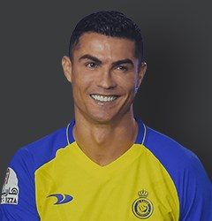
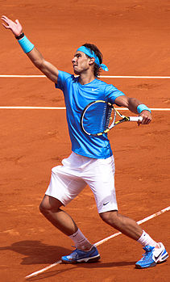

leo messi:

Lionel Messi, the legendary Argentine footballer,
boasts an extraordinary collection of awards that serves as a testament to his unparalleled talent and remarkable career.
With a staggering seven Ballon d'Or titles to his name, Messi holds the record for the most wins in the prestigious accolade.
Additionally, he has claimed numerous other coveted honours, including six European Golden Shoes, recognizing his exceptional goal-scoring prowess. Messi's accolades also extend to team achievements, with ten La Liga titles and four UEFA Champions League triumphs among his impressive haul.
Undoubtedly, Messi's awards reflect his unrivaled skills and his enduring status as one of football's greatest icons.
|  |
Cristiano Ronaldo, the Portuguese football sensation, stands tall among the most decorated players in the history of the sport. |

|
LeBron James, the iconic basketball player, has amassed a remarkable collection of awards that solidify his status as one of the greatest athletes of all time . |
|  |
Rafael Nadal, the Spanish tennis maestro, has amassed a remarkable collection of awards throughout his illustrious career. With a staggering 20 Grand Slam titles, |

|
Dmitry Volkov, the talented opera singer, has garnered an impressive array of awards, showcasing his exceptional vocal abilities and captivating stage presence. |
Summary of tournaments
| year | team | Championships | |
|---|---|---|---|
| messi | 2005-2024 | Barcelona-psg-inter maiamy | 4 champion 8 ballon d'or 1 world cup |
| cr7 | 2003-2024 | united-real madrid-juventus-elnasr | 5 champion 5 ballon d'or |
| nadal | 2004-2014 | spain | grand slam-masrter's cup |
| lebron gemes | 2003-2024 | Cleveland Cavaliers-Miami Heat leveland Cavaliers-Los Angeles Lakers |
Associated Press Sportsman of the Year Award Sports Illustrated Athlete of the Year Associated Press Athlete of the Year |
| Dmitry Volkov | 2013-2024 | CEV | Best foreign player Best outdoor spike Best Outdoor Spyder |